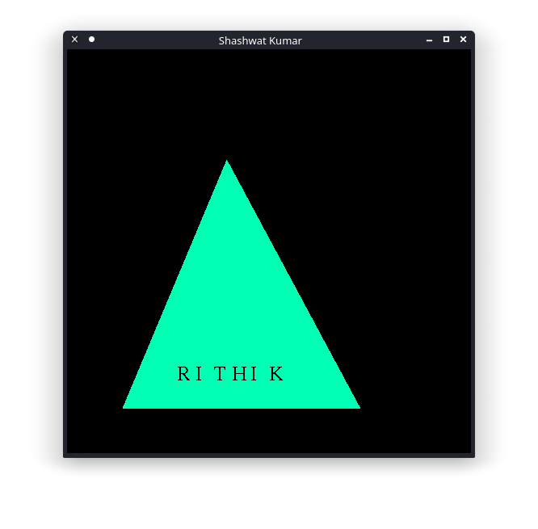

<!-- map is use to define the particular place in a image to open a particular fileor image  -->
<!-- area tag is to define the coordinates of the place in image which is to be clicked -->

<html>
    <body>
        
        
        <map name="mymap">
            <area shape="rect" coords="0,0,300,300" href="hut.png" alt="Error">
            <area shape="circle" coords="150,400,300,300" href="image.png" alt="Error">
            <area shape="ploy2" coords="150,400,300,300" href="hut3w.png" alt="Error">
        </map>

    </body>
</html>
